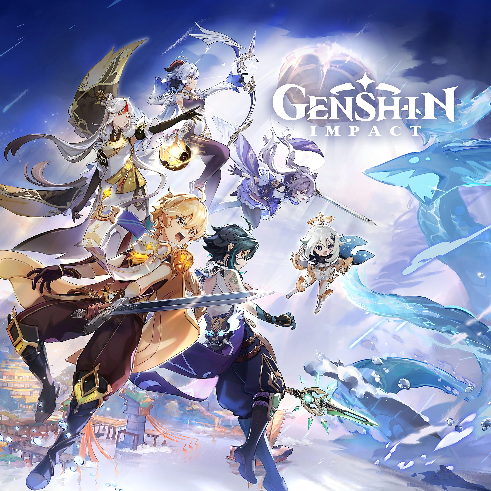

Introductions:
Hi my Name is Ryan Debah and I am 17 years old and a rising senior at York Early College Academy. I am currently enrolled in SEO and All Star Code to help me improve my education in multiple subjects and to help build my resume. My favorite activites include playing video games and reading. I also enjoy just lying down and listening to some music. That's me by the way!:
Interests:
Here I will go more in depth into my favotite interests and activites. Right now my favorite game is Genshin Impact. I say "right now" since as time goes on and I play more games or return to existing ones, my favorite game changes. However, my favorite game of all time has to be Spiderman for the PS4. I also enjoy reading. While not traditional novels or books I read mangas, manwhas, and comics. I also enjoy programming which is one of the main reasons I am enrolled in All Star Code.

Academics
I already stated a little about my academics but, I'm a rising senior at York Early College Academy and am also enrolled in two programs called SEO and All Star Code. At SEO I learn alot about the college process while building a personal statement and learning writing and math throughout the day. At All Star Code, we learn about programming using the languages javascript, HTML, and CSS. We also learn about building a resume and skills that will be useful to have. Overall I have a lot on my plate I feel but I am able to obtain a healthy school/life balance.